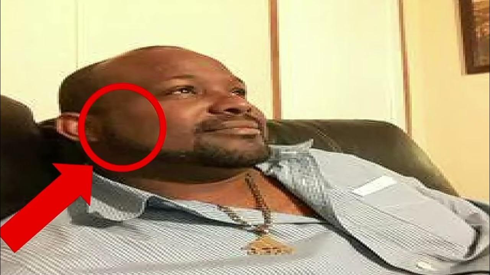

👉Sobre Don pollo👈🔊🎵
El Rey de Ohio ha ganado el corazón de la ciudad, Agustin, alias "Don Pollo" trae para el mundo lo mejor para su entretenimiento y memes. Este personaje se popularizó a mediados de 2022, Don pollo fue y sigue siendo uno de los personajes mas populares de la plataforma tiktok, llegando a diversas comunidades en diferentes idiomas, siendo los principales el español e ingles.
La misión de el Rey de Ohio es: "Proporcionar autoestima y calidad de vida a sus seguidores".
Una de las mejores formas de perder el tiempo, don pollo y sus iconicos tonos de llamada que provocan interrupciones en sus videos son lo primero en lo que se piensa al escuchar el Rey de Ohio.
🗺️Ubicación de Don Pollo
El castillo del Rey de Ohio "Don Pollo" esta ubicada en el centro de la ciudad
Contenido de Don Pollo
- -Memes
- -Sonidos random
- -Asmr de comida
- -Motivacion para comer pollo
- -Te enseña a echarle salsa y picante